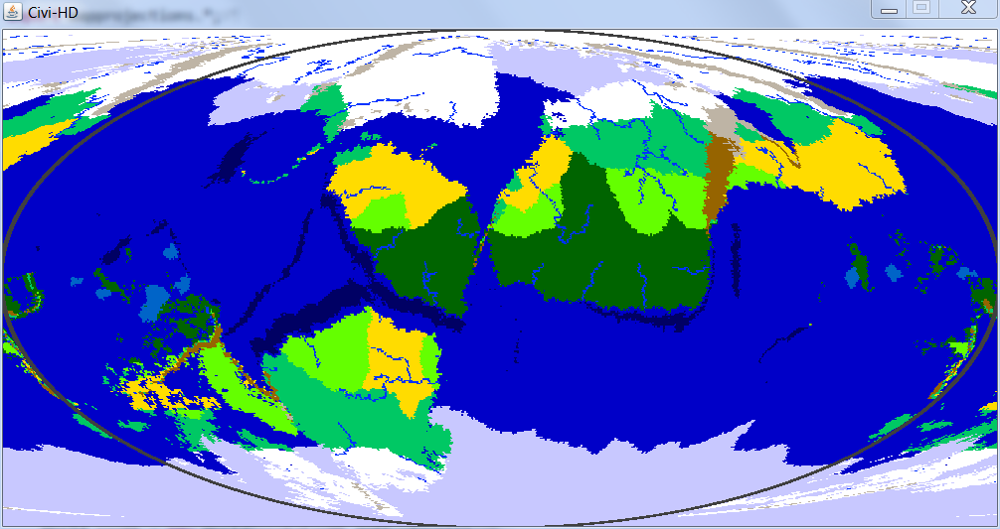

Generates planets, islands, galaxies, and more!
Home | Planet Gen | Island Gen | Civi HD | Civi in Space | Maps
This program generates spherical terrain similarly to Civi-HD. However, it is designed to be much more realistic at the expense of taking much longer. As such, plates will actually move around, and biomes will vary more over longitude.
Download it here!
